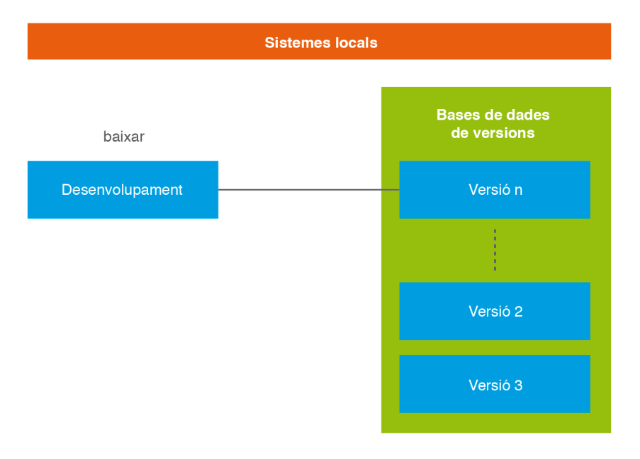
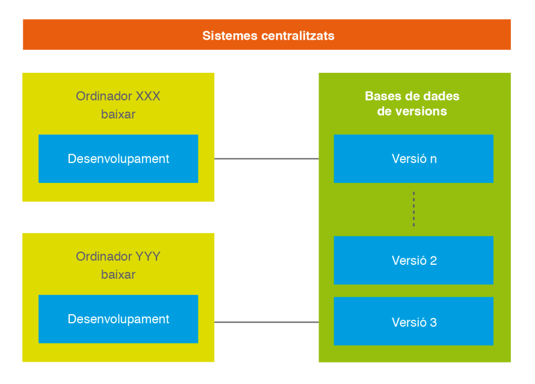
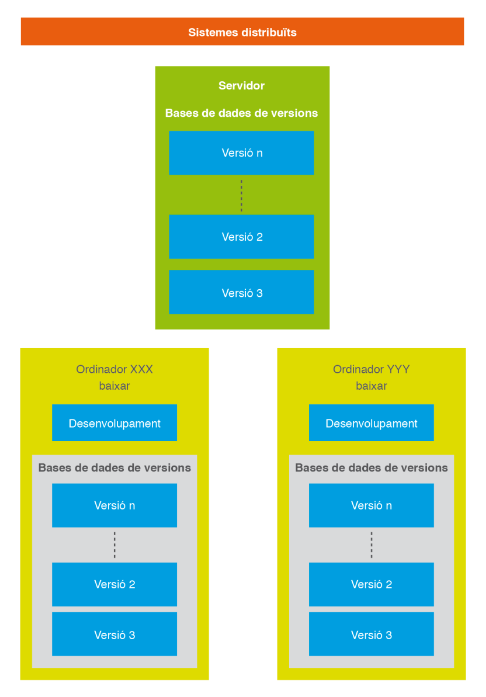
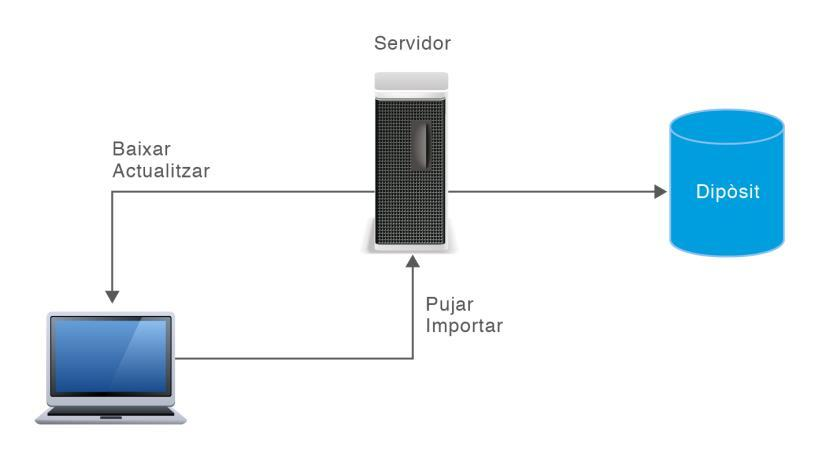

Introducción al control de versiones
Cuando alguien empieza a programar, lo habitual es trabajar con unos pocos archivos y guardarlos a mano cada cierto tiempo. Mientras el proyecto es pequeño, ese método parece suficiente: se escribe código, se guarda el archivo y, si algo se estropea, se intenta recordar qué se había cambiado para dejarlo como estaba. El problema aparece cuando el proyecto crece, cuando pasa el tiempo o cuando deja de ser una tarea individual para convertirse en un trabajo de equipo. En ese momento, la gestión manual de los archivos se vuelve un caos difícil de sostener.
Imaginemos el escenario clásico del trabajo individual desordenado: una carpeta con archivos llamados proyecto_final.java, proyecto_final_v2.java, proyecto_final_v2_bueno.java y proyecto_final_ahora_si.java. Cada nombre es el rastro de una decisión tomada bajo presión, y ninguno explica con claridad qué cambió respecto al anterior ni por qué. Si hay que recuperar una versión concreta, ya no basta con leer los nombres: hay que abrir los archivos, compararlos a ojo y cruzar los dedos para no escoger la copia equivocada. Ese trabajo, además, depende por completo de la memoria y la disciplina de una sola persona; si esa persona falta o simplemente olvida hacer la copia, la información se pierde.
En un equipo, el problema se multiplica. Varias personas editan los mismos archivos a la vez, y sin un mecanismo que ordene los cambios es casi imposible saber quién tocó qué, cuándo lo hizo y con qué intención. El resultado típico son los conflictos de sobrescritura: alguien guarda su versión, borrando sin querer el trabajo que otro acababa de subir, y nadie se da cuenta hasta que el programa deja de funcionar. Aquí es donde entran en juego las herramientas de control de versiones, cuyo objetivo es precisamente poner orden en todo este proceso.
El uso de estas herramientas asegura, por un lado, que los proyectos mantengan una trazabilidad de todos los cambios que han sufrido a lo largo de su vida y de quién los ha realizado, cuestión de vital importancia cuando se trabaja en equipos de software. Y, por otro, convierte el historial del proyecto en una red de seguridad: cualquier estado anterior queda registrado y puede recuperarse, lo que reduce drásticamente el miedo a experimentar y a equivocarse.
Así pues, para un trabajo que no empieza y acaba dentro de un periodo corto de tiempo, o para trabajos que tienen que ser desarrollados por un equipo de personas, es muy recomendable llevar un control de las tareas que se han hecho, cuándo se han llevado a cabo y quién las ha hecho. No es algo exclusivo del desarrollo de software: cualquier proyecto que evoluciona durante meses y en el que intervienen varias manos acaba necesitando un mecanismo de este tipo.
Se habla de gestión de proyectos cuando ese trabajo, además de desarrollarse, se planifica de forma consciente. ¿Qué tiene que ver la gestión de proyectos con el control de versiones de un software que se está desarrollando? Tienen mucho en común, porque ambos comparten la misma lógica de fondo. Si el trabajo pedido es el cambio de la fuente de alimentación de un ordenador, no hará falta planificarlo ni, probablemente, dejar documentada la situación si se deja a medias. En cambio, si un único programador tiene que implementar una calculadora, será discutible decidir si necesita una planificación formal de todo el proceso (analizando, diseñando y desarrollando como si fuera un proyecto completo) o si le basta con una herramienta que gestione las versiones que va produciendo. En ese segundo caso, llevar un control de versiones del software le servirá para poder volver atrás en el momento en que llegue a un punto de no retorno.
Entonces, ¿cuándo es realmente recomendable utilizar un control de versiones? La respuesta es que resulta imprescindible en todos aquellos desarrollos que implican muchas horas de trabajo, un número elevado de ficheros distintos y, aunque no necesariamente, la presencia de varias personas colaborando sobre el mismo proyecto. Un ejemplo paradigmático lo encontramos en el desarrollo de un ERP (Enterprise Resource Planning), un sistema de gestión empresarial formado por decenas de módulos que se construye y se mantiene durante años; en entornos así, trabajar sin control de versiones sería sencillamente inviable.
Concepto
Se puede definir control de versiones como la capacidad de recordar todos los cambios que se realizan tanto en la estructura de directorios como en el contenido de los archivos. Dicho de otro modo, es la memoria del proyecto: cada modificación queda registrada junto al momento en que se produjo, de manera que siempre se puede reconstruir cómo era el trabajo en cualquier instante del pasado. Esto resulta de mucha utilidad cuando se desea recuperar un documento, una carpeta o un proyecto entero en un momento concreto de su desarrollo.
Esa capacidad de memoria también es clave cuando se necesita mantener un cierto control de los cambios sobre documentos, archivos o proyectos que comparten varias personas o un equipo de trabajo. En esos casos no basta con saber qué cambió: también hay que saber quién lo hizo y cuándo, porque esos datos son los que permiten coordinar el trabajo, repartir responsabilidades y entender el porqué de cada decisión.
Un sistema de control de versiones es una herramienta de ayuda al desarrollo de software que irá almacenando, según los parámetros indicados, la situación del código fuente en momentos determinados. La analogía más útil para entenderlo es la de una máquina que va tirando fotos de forma regular: cada cierto tiempo, o cada vez que el programador lo decide, captura el estado completo del código y guarda esa imagen en su historial. Gracias a esas "fotos", siempre se puede volver a contemplar el proyecto tal y como estaba en una fecha anterior.
El tipo de información que hay que almacenar depende mucho del contexto. En un entorno donde solo trabaja un programador, basta con guardar el estado del código cada cierto tiempo junto con los datos principales, como el número de versión o la fecha y hora en que se almacenó. En un entorno multiusuario, donde muchas personas distintas pueden manipular los ficheros e incluso modificar a la vez un mismo documento, la cantidad de información a gestionar crece de golpe: hay que registrar qué usuario ha implementado cada cambio, desde qué máquina se hizo, si se está produciendo algún tipo de conflicto y otra multitud de detalles que solo tienen sentido cuando hay varias manos sobre el mismo proyecto.
Esta funcionalidad no solo será importante en el desarrollo de software, sino también en muchos otros ámbitos. Por poner algunos ejemplos, la creación de un libro a cargo de varios autores es un caso perfecto: si queda grabado en qué momento hizo cada cambio cada colaborador y se conserva una copia de cada modificación, el resto de autores dispone de una información valiosísima para no repetir contenidos ni duplicar esfuerzos. Un ejemplo real de esta forma de trabajar es la redacción de la Wikipedia, donde miles de redactores crean y revisan contenidos con una herramienta que permite el trabajo en equipo y lleva el control de todo lo aportado.
Otro caso ilustrativo lo encontramos en una gestoría o un bufete de abogados que redacta un contrato en colaboración con varios clientes. Ahí no hace falta una herramienta tan potente como una wiki; muchas veces basta con un buen editor de textos que incluya la función de gestión de cambios, de forma que cada modificación quede marcada con un color distinto en función del usuario que la haya realizado. Es la misma idea del control de versiones llevada a un terreno mucho más modesto.
En el desarrollo de software, los sistemas de control de versiones son herramientas que pueden facilitar enormemente el trabajo de los programadores y aumentar la productividad de forma considerable, siempre que se utilicen de forma correcta. Un mal uso del control de versiones (por ejemplo, dejarlo todo para un único commit gigantesco al final del día) genera exactamente los mismos problemas que pretendía resolver, así que la herramienta importa, pero también importa la disciplina con la que se emplea.
Funcionalidades de los sistemas de control de versiones
Algunas de las funcionalidades que ofrecen los sistemas de control de versiones son las siguientes:
- Comparar cambios en los diferentes archivos a lo largo del tiempo. Esta es una de las funciones más útiles en el día a día: permite ver exactamente qué líneas se han modificado entre dos versiones y, además, averiguar quién ha modificado por última vez un determinado archivo o trozo de código fuente. Cuando algo deja de funcionar, esa información ahorra horas de búsqueda.
- Reducción de los problemas de coordinación entre programadores. Con un sistema de control de versiones, el equipo puede compartir su trabajo, ofrecer las últimas versiones del código o de los documentos y, lo más importante, trabajar de forma simultánea sin el temor permanente a sobrescribir el trabajo ajeno. La coordinación deja de depender de acuerdos verbales y pasa a estar respaldada por la propia herramienta.
- Posibilidad de acceder a versiones anteriores de los documentos o del código fuente. Las copias de seguridad pueden generarse de forma programada o, incluso, almacenar cada cambio efectuado. Si el programador comete un error puntual, o si descubre que durante los últimos días ha ido por el camino equivocado, puede acceder a versiones anteriores del código o deshacer, paso a paso, todo lo desarrollado.
- Ver qué programador ha sido el último en modificar un determinado trozo de código que puede estar causando un problema. Saber quién hizo un cambio es el primer paso para entender por qué se hizo, y muchas veces la conversación con esa persona resuelve el problema en cuestión de minutos.
- Acceso al historial de cambios sobre todos los archivos a medida que avanza el proyecto. Este historial no solo interesa a quien programa: también sirve al jefe de proyecto o a cualquier parte interesada (stakeholder) con permisos para ver la evolución del trabajo y entender el ritmo al que avanza.
- Volver un archivo concreto, o el proyecto entero, a uno o varios estados anteriores. Esta es la red de seguridad definitiva: por muy mal que se tuerzan las cosas, siempre existe una versión saludable a la que regresar.
Los sistemas de control de versiones ofrecen, además, un conjunto de funcionalidades orientadas a la gestión y al seguimiento del proyecto:
- Control histórico detallado de cada archivo: permite almacenar toda la información de lo que ha sucedido con un archivo, como por ejemplo todos los cambios efectuados, quiénes los hicieron, el motivo de cada cambio y todas las versiones que ha tenido desde su creación.
- Control de usuarios con permisos para acceder a los archivos. Cada usuario tendrá un tipo de acceso determinado: podrá consultar, modificar, borrar o crear archivos, pero siempre dentro de lo que la herramienta le permita. Este control lo gestiona el propio sistema de control de versiones, almacenando los usuarios posibles y los permisos que tienen asignados.
- Creación de ramas de un mismo proyecto: en el desarrollo de un proyecto hay momentos en que conviene ramificarlo, es decir, a partir de un punto determinado, crear dos líneas de desarrollo que avanzan por separado. Un caso típico se da al entregar una primera versión estable a los clientes: por un lado hay que mantenerla y corregir sus fallos, y por otro hay que seguir evolucionando el producto con nuevas funcionalidades.
- Fusionar dos versiones de un mismo archivo: permite unir dos conjuntos de cambios, escogiendo de cada parte el código que más interese a los desarrolladores. Es una operación delicada que, cuando hay cambios solapados, requiere la validación manual de una persona.
Componentes de un sistema de control de versiones
Un sistema de control de versiones se compone de varios elementos que manejan una terminología un poco específica. Conviene familiarizarse con ella desde el principio, porque aparece constantemente en la documentación y en las conversaciones técnicas. A continuación se definen los elementos más importantes:
- Repositorio: el conjunto de datos almacenados que forman el historial del proyecto. Es el lugar donde quedan guardados todos los datos y cambios, y puede estar en un sistema de archivos de un disco duro, en una base de datos o en un servidor. Un mismo repositorio puede contener las versiones de un único proyecto o de varios.
- Módulo: una carpeta o directorio específico dentro del repositorio. Un módulo puede hacer referencia al proyecto completo o solo a una parte de él, es decir, a un conjunto determinado de archivos.
- Revisión o versión: cada una de las versiones almacenadas de un proyecto. Puede referirse a todos los archivos que componen una versión en un instante de tiempo, o solo a los archivos que se han modificado desde la última versión. Algunos sistemas identifican las revisiones con un número contador (como Subversion); otros las identifican mediante un código de detección de modificaciones (Git usa SHA1). A la última versión se la conoce como la cabeza o HEAD.
- Etiquetar o rotular (tag): información que se añade a un módulo para señalar alguna característica especial que lo distingue. Suele ser un texto y, a menudo, se introduce manualmente. Su utilidad principal es marcar hitos importantes: cuando se publica una versión concreta, se le pone una etiqueta para poder localizarla y recuperarla en cualquier momento. Las etiquetas permiten identificar de forma sencilla las revisiones relevantes de un proyecto, como la versión 1.0 o una entrega a un cliente.
- Tronco (trunk): la línea principal de desarrollo de un proyecto, sobre la que se va construyendo el producto y de la que salen las ramas.
- Rama: una copia de un módulo o de una revisión entera que se aparta para trabajar en paralelo sin afectar al desarrollo en curso. Cuando se crea una rama, se bifurca el proyecto y se originan dos líneas de trabajo independientes. Los motivos habituales para crear una rama son el desarrollo de una nueva funcionalidad o la corrección de un error, sin que ese trabajo interfiera con la versión estable.
- Desplegar (checkout): crear una copia de trabajo del proyecto, o de archivos y carpetas del repositorio, en el equipo local. Por defecto se obtiene la última versión, aunque también se puede pedir una versión concreta. El checkout vincula la carpeta de trabajo local con el repositorio y crea los metadatos de control de versiones.
- Confirmar (commit o check-in): el acto de confirmar los cambios realizados en local para integrarlos en el repositorio. Es el momento en el que el trabajo personal pasa a formar parte del historial común.
- Exportación (export): similar al checkout, pero sin vincular la copia con el repositorio. Es una copia limpia, sin los metadatos de control de versiones, útil cuando solo se quiere el contenido.
- Importación (import): la subida de carpetas y archivos del equipo local al repositorio, que se puede hacer en cualquier momento desde el sistema de archivos.
- Actualizar (update): la operación de integrar en la copia de trabajo local los cambios que otros han hecho en el repositorio. Es el paso previo imprescindible antes de empezar a modificar, para no trabajar sobre una versión antigua.
- Fusión (merge): unir los cambios realizados sobre uno o varios archivos en una única revisión. Se suele realizar cuando hay varias líneas de desarrollo separadas en ramas y, en algún momento, se necesita juntar los cambios entre ramas o entre una rama y el tronco principal.
- Conflicto: la situación que ocurre cuando dos usuarios crean una copia local de la misma versión de un archivo, uno de ellos realiza cambios y los envía al repositorio, y el otro, sin actualizar esos cambios, modifica el archivo e intenta enviar también sus cambios. En ese momento el sistema no es capaz de fusionar por sí solo las dos versiones y avisa de que hay un conflicto.
- Resolver conflicto: la actuación del usuario para atender ese conflicto, combinando los dos conjuntos de cambios o eligiendo uno de ellos.
Para trabajar con un sistema de control de versiones, lo primero es crearse una copia local de la información del repositorio con un checkout, lo que vincula esa copia con el repositorio. A partir de ahí, el usuario realiza sus modificaciones y, una vez finalizadas, sube los cambios con un commit. Si la copia ya está vinculada al repositorio, antes de modificar nada conviene hacer un update, para asegurarse de que los cambios parten de la última versión disponible y no de una copia desfasada.
Clasificación de los sistemas de control de versiones
Las herramientas de control de versiones pueden clasificarse en función de dónde vive el historial del proyecto y de cómo acceden los desarrolladores a él. Según ese criterio, hablamos de sistemas locales, centralizados y distribuidos. Aunque los tres persiguen el mismo objetivo, su arquitectura marca diferencias profundas en la resiliencia, la colaboración y los riesgos que asume el equipo.
Sistemas locales
Los sistemas de control de versiones locales son aquellos que permiten llevar a cabo todas las acciones necesarias dentro de la propia máquina del programador, sin depender de ningún servidor. En su forma más básica, ni siquiera requieren una herramienta específica: un programador que trabaje solo puede ir haciendo copias de seguridad de sus archivos o carpetas de vez en cuando. Este planteamiento tan artesanal arrastra dos características intrínsecas:
- El propio programador es quien debe recordar hacer las copias de seguridad cada cierto tiempo, según el criterio que se haya fijado.
- El propio programador es quien debe decidir dónde almacena esas copias, que lo habitual es que acaben en local, en otra ubicación del disco duro interno o en un dispositivo de almacenamiento externo.

Estos sistemas tienen un riesgo alto, precisamente porque dependen por completo de las decisiones de una persona, pero a cambio son extremadamente sencillos de planificar y de ejecutar. Lo más común en estos casos es ir creando copias de seguridad (que vienen a ser versiones del proyecto) en carpetas con nombres representativos, como la fecha y la hora en que se hicieron. Ese método se convierte en un colador en cuanto aparece la más mínima falta de disciplina: un olvido a la hora de copiar, una confusión que lleva al programador a seguir desarrollando sobre una copia antigua o a repartir el trabajo en ubicaciones distintas durante días diferentes. Cuando eso ocurre, el historial deja de ser fiable y la supuesta red de seguridad se rompe.
Para atajar estos problemas aparecieron los primeros repositorios de versiones, que incorporaban una pequeña base de datos donde se registraban de forma automatizada todos los cambios efectuados: sobre qué archivos, quién los había hecho y cuándo. Ese fue el primer paso desde las copias manuales hacia un control de versiones de verdad.
Sistemas centralizados
Un sistema de control de versiones centralizado es el que permite desarrollar un proyecto informático con más de un ordenador, y se contrapone al sistema distribuido, que también trabaja con varios ordenadores pero de una forma muy distinta. En los sistemas centralizados hay varios programadores desarrollando en varios equipos, todos ellos accediendo a los mismos archivos de trabajo y a las mismas versiones almacenadas. Es una situación mucho más cercana a la realidad de cualquier equipo de desarrollo actual.
La idea central es que las copias de seguridad, o versiones almacenadas, se encuentran de forma centralizada en un único servidor, accesible desde cualquier ordenador que participe en el proyecto. Cuando un programador quiere trabajar, se conecta a ese servidor, descarga los archivos, los modifica y, cuando termina, envía sus cambios de vuelta. Todo el historial vive en ese punto central, y los equipos de los desarrolladores son meros clientes que consultan y envían información.

Ese diseño, cómodo y fácil de entender, introduce sin embargo un inconveniente que a veces es muy difícil de salvar: el punto único de fallo. ¿Qué sucede si el servidor central se cae? Si es un fallo temporal, los desarrolladores se quedan sin poder acceder durante un rato. Pero si es un fallo del sistema, habrá que disponer de un sistema de recuperación o de una copia alternativa, porque mientras el servidor esté caído nadie podrá trabajar de forma colaborativa, ni consultar las versiones almacenadas, ni enviar nuevas. Toda la actividad del equipo queda en suspenso hasta que el servidor vuelva a estar disponible. Esta dependencia absoluta de un único punto es la desventaja más seria de la arquitectura centralizada.
Además, como el repositorio se concentra en un único ordenador y en una única ubicación, la creación de una rama también se lleva a cabo en ese mismo lugar, duplicando carpetas dentro del servidor. Los puntos débiles del trabajo con ramas heredan, por tanto, los mismos problemas que acabamos de describir para el conjunto del sistema.
Sistemas distribuidos
Los sistemas de control de versiones distribuidos surgen como respuesta directa a esa debilidad. La solución que proponen es tan sencilla como potente: en lugar de que solo el servidor guarde el historial, cada ordenador de trabajo dispone también de una copia completa de las versiones almacenadas. Es decir, cada desarrollador tiene en su máquina un repositorio entero, con todo el historial, no una simple copia parcial.

Esta duplicidad de las versiones ofrece una disponibilidad que reduce muchísimo las posibilidades de quedarse sin acceso a los archivos. La clave está en que el historial ya no vive en un solo lugar: si el servidor falla, el resto de ordenadores pueden seguir trabajando con normalidad, porque cada uno conserva su propia copia completa. Y, llegado el caso, cualquiera de esos clientes puede volcar su copia íntegra hacia el servidor para restaurarlo tal y como estaba.
¿Cómo funciona este sistema en la práctica? Cada vez que un ordenador cliente accede al servidor para obtener una versión anterior, no se limita a copiar ese archivo suelto, sino que sincroniza el conjunto de los datos. La idea es que el servidor sigue actuando como punto de encuentro que gestiona el sistema de versiones, pero deja de ser un eslabón imprescindible: en caso de necesidad, se puede recurrir a las copias locales que atesoran los ordenadores clientes. Esa resiliencia, la capacidad de seguir funcionando a pesar de la caída de un componente, es la gran ventaja de los sistemas distribuidos y la razón por la que Git, el sistema que estudiaremos a fondo, adopta este modelo.
Operaciones básicas de un sistema de control de versiones
Entre las operaciones más habituales de un sistema de control de versiones (tanto en los centralizados como en los distribuidos) se pueden diferenciar dos grandes tipos: aquellas que permiten la entrada de datos al repositorio y aquellas que permiten obtener datos del repositorio. Entender esta distinción ayuda a saber, en cada momento, si estamos aportando trabajo al historial común o trayendo trabajo desde él.

Entre las operaciones de introducción de datos al repositorio se encuentran:
- Importación de datos: permite llevar a cabo la primera copia de seguridad o versionado de los archivos con los que se va a trabajar en local hacia el repositorio. Es el punto de partida, el momento en el que un proyecto deja de ser un conjunto de archivos sueltos y pasa a tener historial.
- Confirmar (commit): permite enviar al repositorio los datos correspondientes a los cambios que se han producido en el equipo local. Aquí hay un matiz importante: no se hace una copia entera de toda la información, sino que solo se envían los archivos que se han modificado, lo que mantiene la operación ligera y rápida.
Entre las operaciones de exportación de datos del repositorio se encuentran:
- Desplegar (checkout): permite tener acceso y descargar una versión de trabajo de un archivo, un módulo o una revisión completa a un ordenador cliente. Es la operación con la que un desarrollador se lleva el proyecto a su máquina para empezar a trabajar.
- Actualización (update): permite llevar a cabo una copia de seguridad de todos los datos del repositorio al ordenador cliente con el que trabajará el programador. Esta operación se puede efectuar de forma manual, cuando el programador lo estime oportuno, o de forma automática, como sucede en los sistemas distribuidos, donde cada vez que un cliente accede al repositorio se hace una copia completa en local.